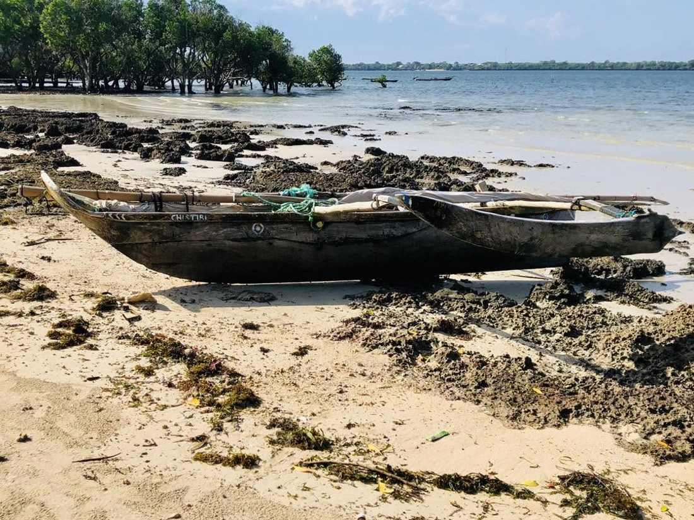

SOFIA 2026: The World's Biggest Fisheries Report Just Launched in Mombasa
The FAO's flagship SOFIA 2026 report launched right here in Mombasa — here's what its global fisheries data means for small-scale fishing on Kenya's coast.

In mid-June, the world's most important fisheries report was launched — not in Rome or Geneva, but right here in Mombasa, at the 11th Our Ocean Conference. The State of World Fisheries and Aquaculture (SOFIA) 2026 is the FAO's biennial check-up on the health of the world's oceans and the people who depend on them, and this year it happened in our backyard.
The headline numbers
Global fish and seafood production hit a record 235 million tonnes in 2024. For the first time, farmed aquaculture crossed 100 million tonnes on its own — a genuine milestone. Wild-caught fisheries, meanwhile, have held steady at around 92 million tonnes a year since the late 1980s, which tells its own story: the ocean's wild catch has a natural ceiling, and the world is already fishing close to it. About 73% of global fish stocks remain within biologically sustainable limits.
Why it matters on this coast
Buried in the report's regional detail is a number that means more to us than any global tonnage figure: small-scale fisheries across the Western Indian Ocean — Kenya, Mozambique, South Africa, and Madagascar — support more than 65 million people's food and income. That's not an abstraction here. It's Shimoni. It's the small boats that bring in what ends up in your FishBox, and the households those boats support.
What it means for your Jodari
One detail that jumped out at us: global tuna catches hit a record high in 2024. Jodari is one of our best sellers, and it's reassuring to see the wider tuna fishery being tracked this closely — a well-managed tuna stock is what keeps it on the menu for years to come, not just this season.
Curious what's in season this week? See what our fishermen brought in.